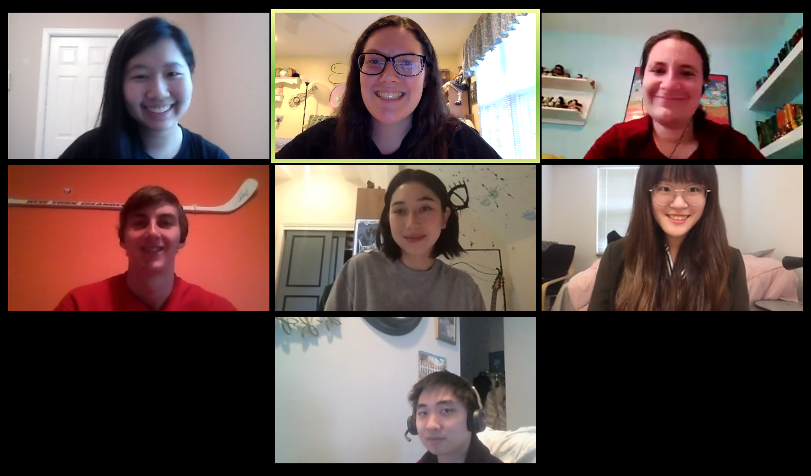

I decided for my senior year to take the follow-up to the introduction to game design course that I had taken two years prior. CS 4152: Advanced Topics in Computer Game Development has students work in teams through a semester and develop a game on a mobile platform.
With Cornell, like most other universities, shutting down due to COVID-19 and going virtual, our team had to learn halfway through the semester how to work together virtually.
You can find our game here.